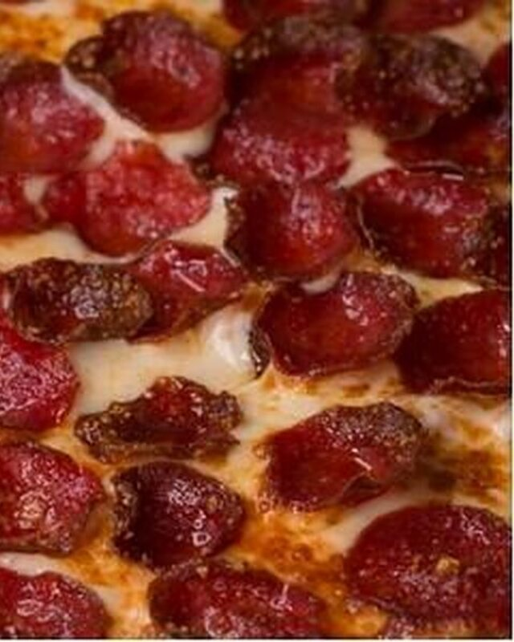
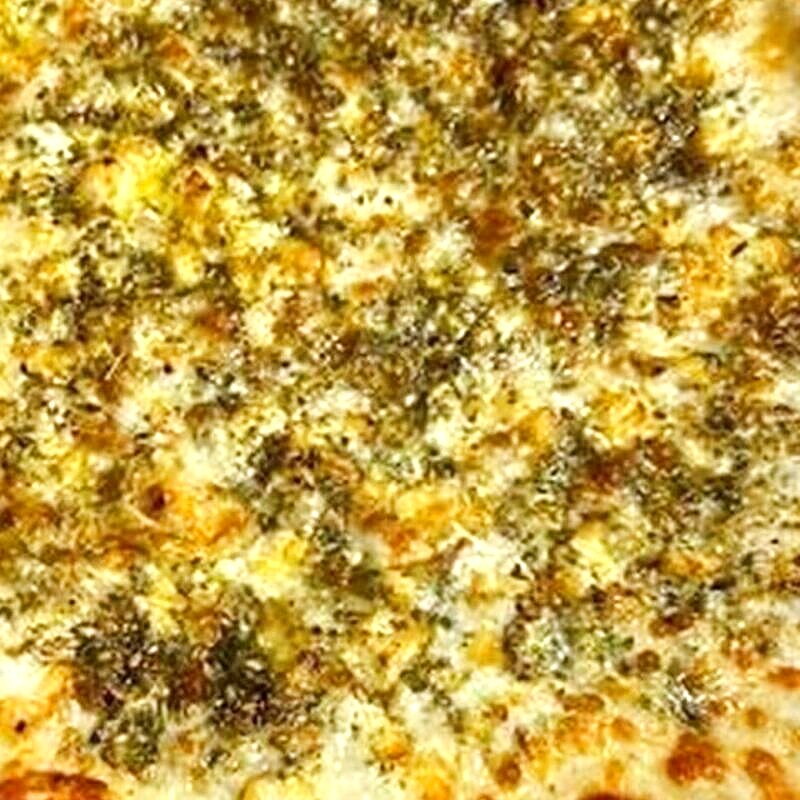

hand-crafted pies for your event
Antonia's Pizza catering is located at 891 Higuera St, San Luis Obispo, CA 93401 and 729 12th St, Paso Robles, CA 93446. Hand-crafted pizzas from 10" to 28", the famous Ajarski dough boat, pasta, wings & sides, salads and sandwiches for corporate, winery, Cal Poly, birthdays and weddings. Min order and lead time are owner to confirm — contact for quote.
pizza, italian, winery, corporate, Cal Poly, birthdays & weddings
Facts only — no invented menu. Catering menu is owner to confirm whether same as regular menu or separate. We list what we know from master data: hand-crafted pizzas 10"–28", Ajarski Original/American/Mexicano/SLO Style, pasta, wings & sides, salads, sandwiches & more, desserts. Dietary: vegetarian options, vegan cheese owner to confirm, gluten-free owner to confirm.

Pizza 10"–28"
Hand-crafted dough, home-made tomato sauce, SLO-style seasoned crust. Cheese, pepperoni, BBQ chicken, pesto chicken and more — owner to confirm catering sizes.

The Ajarski
Georgian-style dough boat — mozzarella, feta, egg, butter. Original, American, Mexicano, SLO Style. Famous on Higuera St.

Italian Kitchen
Pasta, wings & sides, salads, sandwiches, desserts — same kitchen that makes the pies. Owner to confirm catering portions.
min order, lead time, delivery — owner to confirm, contact for quote
Min order
Owner to confirm — e.g., $ amount or # of people. Contact for quote: (805) 439-2383 SLO or (805) 238-1851 Paso.
Lead time
Owner to confirm — typically 24-48h, same-day may be possible. Call to check availability.
Delivery areas
SLO, Cal Poly, Los Ranchos, Avila Beach, Edna, Sycamore Springs, Paso Robles, Templeton, Atascadero, Santa Margarita. Extended areas owner to confirm. Delivery fee owner to confirm.
Service
Drop-off only? Setup? Staffed? Plates/utensils included? Owner to confirm.
Dietary
Vegetarian options available. Vegan cheese and gluten-free owner to confirm. Mention dietary needs when you call.
Pricing
Per person? Packages? Deals? Owner to provide if wants published, otherwise contact for quote. No invented prices.
SLO & Paso Robles — same dough, two downtown kitchens
Paso Robles wineries, Travel Paso, local orgs — owner partnerships to confirm.
Corporate events, Cal Poly events, birthdays, weddings — contact for details.
Box, patio, feast, night — real-* owner untouched, gen/* masters gitignored.


questions — answers are owner to confirm where noted
Minimum order and guest count are owner to confirm. Contact us at (805) 439-2383 SLO or (805) 238-1851 Paso Robles for a quote. No invented prices.
Lead time is owner to confirm — typically 24-48 hours, same-day may be possible. Call us to check availability.
We cater in San Luis Obispo, Cal Poly, Los Ranchos, Avila Beach, Edna, Sycamore Springs, Paso Robles, Templeton, Atascadero, Santa Margarita. Extended areas owner to confirm. Delivery fee owner to confirm.
Vegetarian options are available. Vegan cheese and gluten-free options are owner to confirm — please mention dietary needs when you call.
Service type — drop-off, setup, staffed — is owner to confirm. Plates and utensils inclusion owner to confirm.
Yes, we cater winery events, corporate events, Cal Poly events, birthdays and weddings in Paso Robles and San Luis Obispo. Contact us for details. Partnerships with Travel Paso, local orgs, wineries owner to confirm.
Hungry for catering?
Two kitchens, same dough — SLO 891 Higuera & Paso 729 12th. Call for quote.